In this example we consider the flow in a 2D channel which is partially obstructed by an oscillating leaflet. We consider the case where the motion of the leaflet is prescribed – this is a "warm-up exercise" for the corresponding FSI problem in which the leaflet is an elastic structure.
The Problem
The figure below shows a sketch of the problem: A 2D channel of height  and length 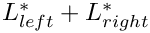 is partially occluded by a (zero-thickness) leaflet of height 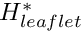. The leaflet is parametrised by a Lagrangian coordinate
and length 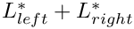 is partially occluded by a (zero-thickness) leaflet of height 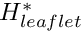. The leaflet is parametrised by a Lagrangian coordinate  so that the position vector to a material point on the leaflet is given by 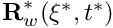, and we assume that the leaflet performs time-periodic oscillations with period 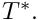 Steady Poiseuille flow with average velocity
so that the position vector to a material point on the leaflet is given by 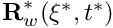, and we assume that the leaflet performs time-periodic oscillations with period 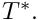 Steady Poiseuille flow with average velocity  is imposed at the left end of the channel while we assume that the outflow is parallel and axially traction-free.
is imposed at the left end of the channel while we assume that the outflow is parallel and axially traction-free.

We non-dimensionalise all length and coordinates on the channel width, 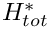 , time on the natural timescale of the flow, 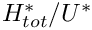, the velocities on the mean velocity, , and the pressure on the viscous scale. The problem is then governed by the non-dimensional Navier-Stokes equations
![\[ Re \left( St \frac{\partial u_i}{\partial t} + u_j \frac{\partial u_i}{\partial x_j} \right) = - \frac{\partial p}{\partial x_i} + \frac{\partial }{\partial x_j} \left[ \left( \frac{\partial u_i}{\partial x_j} + \frac{\partial u_j}{\partial x_i} \right) \right], \]](form_9.png)
where 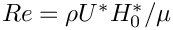 and  , and
, and
![\[ \frac{\partial u_i}{\partial x_i} = 0, \]](form_12.png)
subject to parabolic inflow
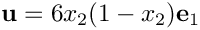
at the inflow cross-section; parallel, axially-traction-free outflow at the outlet; and no-slip on the stationary channel walls,  . The no-slip condition on the leaflet is
. The no-slip condition on the leaflet is
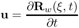
and the leaflet performs oscillations with non-dimensional period 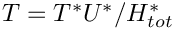. Here is a sketch of the non-dimensional version of the problem:

An interesting feature of this problem is that even though the leaflet is assumed to have negligible thickness its presence will generate a pressure jump between its two faces. (The velocities are continuous because the no-slip condition imposes the same velocity on both faces.) When discretising the problem with QTaylorHood elements (for which the pressure varies continuously across the element boundaries), the mesh must therefore be "opened up" with a cut along the position of the leaflet. This is done in the constructor of the ChannelWithLeafletMesh which forms the basis of RefineableAlgebraicChannelWithLeafletMesh used to discretise this problem. (See Further comments and exercises for a more detailed discussion of the mesh.)
Results
The figure below shows a snapshot of the flow field
(pressure contours and instantaneous streamlines) for a Reynolds number of 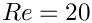 and an oscillation period of 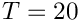, as well as the corresponding fluid mesh. Note how oomph-lib's automatic mesh adaptation has refined the mesh near the tip of the leaflet where the pressure has a singularity.

The corresponding animation illustrates the algebraic node update strategy (implemented with an AlgebraicMesh, discussed in more detail in another tutorial) and the evolution of the flow field. Note that the instantaneous streamlines intersect the (impermeable) leaflet because the leaflet is not stationary.
The global parameters
As usual we use a namespace to define the (single) global parameter, the Reynolds number.
Specification of the leaflet geometry
We specify the leaflet geometry and its time-dependent motion by representing it as a GeomObject. The GeomObject has one Lagrangian and two Eulerian coordinates, and its geometry is characterised by its length, the x-coordinate of its origin, 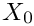, and the period and amplitude of the horizontal and vertical tip deflection.
The driver code
We store the command line arguments, create a DocInfo object, and assign the parameters that specify the domain and the leaflet geometry:
Next we build the problem and assign the time-stepping parameters (as usual, fewer timesteps are used during a validation run which is identified by a non-zero number of command line arguments):
We start the simulation with a steady solve, allowing up to five levels of adaptive refinement (fewer if we are performing a validation run):
Finally, we enter the proper timestepping loop, allowing one spatial adaptation per timestep and suppressing the re-assignment of initial conditions following an adaptation by setting the parameter first to false (see the discussion of timestepping with automatic mesh adaptation in another tutorial.)
The Problem class
The problem class has the usual member functions to perform actions after the mesh adaptation and before every implicit timestep:
The problem constructor
We construct the timestepper and the GeomObject that represents the leaflet, and pass it pointers to them to the constructor of the RefineableAlgebraicChannelWithLeafletMesh (discussed in more detail in Further comments and exercises).
Next we create the spatial error estimator and loop over the elements to set the pointers to the relevant physical parameters.
The velocity is prescribed everywhere apart from the outflow boundary (boundary 1; see the sketch in Further comments and exercises for the enumeration of the mesh boundaries). Along the inflow (boundary 3) we apply a parabolic velocity profile with unit flux:
Finally, we pin the redundant pressure degrees of freedom (see another tutorial for details), and assign the equations numbers.
Actions before the timestep
Before each timestep we update the nodal positions in the mesh and re-apply the no-slip condition on the nodes of the moving leaflet (boundaries 4 and 5; see the sketch in Further comments and exercises for the enumeration of the mesh boundaries).
Actions after the mesh adaptation
Once the mesh has been adapted, we free all pressure degrees of freedom and then (re-)pin any redundant ones (see another tutorial for details):
Note that the default interpolation of the (quadratic!) inflow velocity profile from father to son elements during the mesh adaptation already ensures that the inflow profile remains quadratic, therefore no further action is required.
Post-processing
The function doc_solution(...) documents the results.
Further comments and exercises
Further comments: The algebraic node update procedure
The figure below illustrates the algebraic node update procedure employed in the RefineableAlgebraicChannelWithLeafletMesh. The mesh employs four different node update functions, depending on which region a node is located in: Nodes in region I (or II) are located on straight lines that connect the upstream (or downstream) boundary with the leaflet; nodes in region III (or IV) are located on straight lines that connect the upstream and (or downstream) boundary with the straight line from the tip of the leaflet to upper channel wall.

The implementation of the node update functions is straightforward and can be found in the source files
and
which also illustrate how the mesh is constructed by inheritance from the SimpleRectangularQuadMesh (the main task being the creation of additional nodes in the interior to "cut open" the mesh along the position of the leaflet). The source files also contain other versions of the mesh in which the node update is performed with Domain/MacroElements, using the technique described in another tutorial.
Exercise
With the node update strategy illustrated above, the position of all nodes in the fluid mesh has to be updated when the leaflet moves. This is not a particular problem in the current application where the node-update is only performed once per timestep. However, in the corresponding FSI problem , the approach is costly because of the of large number of shape derivatives to be computed.
As an exercise, we suggest to make the node-update procedure more efficient by sub-dividing the regions upstream and downstream of the leaflet into a central section in which the nodes move in response to the motion of the leaflet (the old regions I-IV) and two additional regions (regions V and VI) in which they remain stationary. This is easy because, as explained elsewhere, all AlgebraicNodes already have a default node update function that leaves them stationary.

Acknowledgements
- This code was originally developed by Floraine Cordier.
Source files for this tutorial
- The source files for this tutorial are located in the directory:
demo_drivers/navier_stokes/channel_with_leaflet/
- The driver code is:
demo_drivers/navier_stokes/channel_with_leaflet/channel_with_leaflet.cc
PDF file
A pdf version of this document is available.